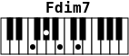
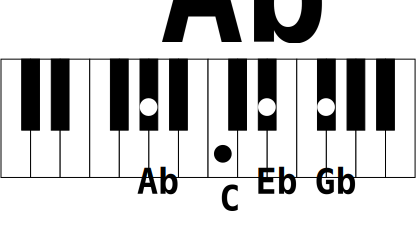
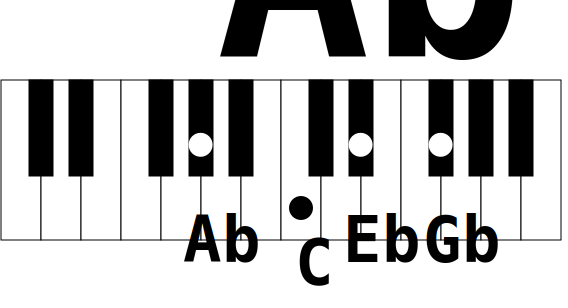

Examples¶
Preamble¶
You can visualize SVG files in a modern browser by pointing to the URL file:///path-to-my-file/my_svg_file.svg. Using the command line may even be faster
firefox file:///path-to-my-file/my_svg_file.svg &
If you have inkscape installed on your system, you probably have inkview tool too. Both allow you to view SVG files.
inkview my_svg_file.svg # view svg file in an X window
If you are running Linux, you may also consider using librsvg and its rsvg-view-3 command line tool.
rsvg-view-3 my_svg_file.svg # view svg file in an X window
Basic¶
The most basic usage of showchord is with an empty string as argument. This produces a two scales keyboard without any mark or title.
showchord ''
The result is the SVG file chord_0.svg:
Another more common basic usage is with a chord description:
showchord 'C E G B'
As before, that creates an SVG file representing a 2 scales piano keyboard but this time with marks on the keys of the chord notes. The output file has the same automatic name as before (chord_0.svg): 
Change fileprefix¶
To change the automatic filename you can choose a specific prefix, use --fileprefix (-f) option:
showchord 'C E G B' 'F A C E' --fileprefix maj7_
This creates two following SVG files:
Export to PNG¶
You may prefer to have bitmap images instead of svg files. For this reason it is possible to export the result SVG file to PNG raster image with the --export (-e) option:
showchord --export 'D F# A C' -f export_
This example produces automatically SVG and PNG files:
Chord title¶
If you need to name the chord or to show any title above the keyboard, you must provide it directly after the chord description:
showchord 'F Ab Cb Ebb;Fdim7'
This creates the SVG file chord_Fdim7_0.svg: 
Notes name¶
To display notes name below the keyboard, use the --keyprint (-k) option.
showchord 'F# A# Cx E#;F# aug M7' -f kp_ --keyprint
This creates the SVG file kp_Fs_aug_M7_0.svg:
Zoom¶
The default size of a chord drawing can be modified with the --zoom option. This is not very useful with SVG file as svg drawings can be resized without quality loss, but the corresponding bitmap images may look ugly if zoomed with an image viewer. The --zoom option takes a float number, 1.0 being the default value.
Let’s try 3 different sizes of the same chord, with zoom values of 0.75, 2.96 and 4.0
for i in 0.75 2.96 4 ; do showchord 'ab c eb gb;Ab 7' -k -f zm_${i}_ --zoom $i ; done
The result images are the following:
--zoom 2.96: 
--zoom 4.0: 
Stream input¶
Stream input is the natural mode for providing chords. You can provide as many chords as you like in a single call. However, you may want to prepare many chords in a text file and draw them at once. You can use system redirection to achieve this.
Caution
You must not provide any chords at the command line for input stream to work
A line in the file must be of the form chord;chordname e.g: C E G B;Cmaj7.
Say we have the file minor-chords-root.txt containing minor chords at root position:
cat examples/stream/minor-chords-root.txt
C Eb G;Cm
C# E G#;C#m
Db E Ab;Dbm
D F A;Dm
D# F# A#;D#m
Eb Gb Bb;Ebm
E G B;Em
F Ab C;Fm
F# A C#;F#m
Gb A Db;Gbm
G Bb D;Gm
G# B D#;G#m
Ab B Eb;Abm
A C E;Am
A# C# F;A#m
Bb Db F;Bbm
B D F#;Bm
To generate the drawings of each chords with --keyprint and --zoom 1.5 options, we use the following shell command:
showchord -f min_ -k -z 1.5 < minor-chords-root.txt
This provides one SVG file per line:

{kind=link}
{kind=link}
{kind=link}
{kind=link}
{kind=link}
{kind=link}
{kind=link}
{kind=link}
{kind=link}
{kind=link}
{kind=link}
{kind=link}
{kind=link}
{kind=link}
{kind=link}
{kind=link}
{kind=link}
{kind=link}
{kind=link}
{kind=link}
{kind=link}
{kind=link}
{kind=link}
{kind=link}
{kind=link}
{kind=link}